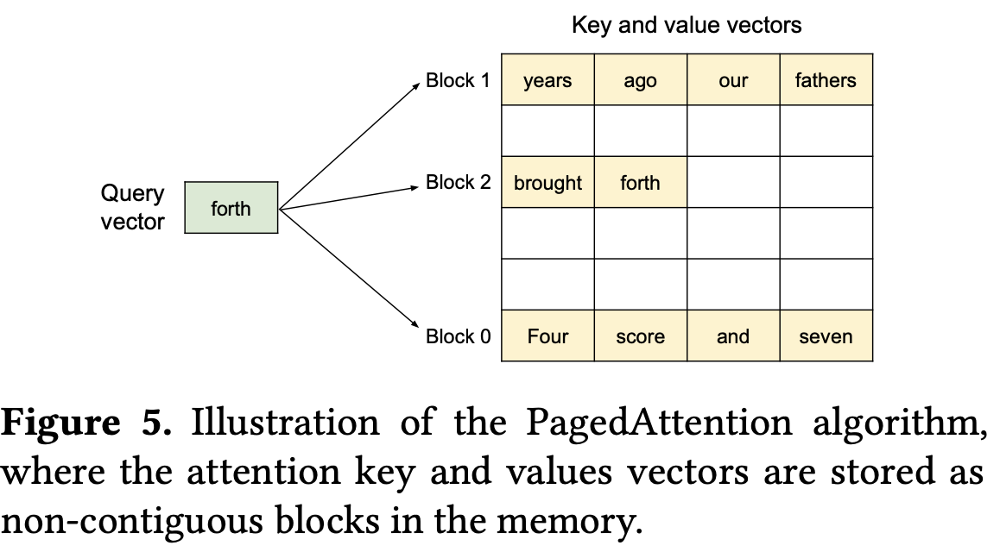

LLM —— KV Cache
有哪些KV Cache方法？MLA如何实现KV Cache？
为了避免生成式任务中KV的自回归重复计算将KV提前缓存。针对KV Cache优化的典型方法分为：
- 共享KV：通过减少 KV 头的数量降低显存占用与计算开销，如MQA、GQA、MLA。
- 窗口KV：通过限制 KV 缓存长度，将显存占用从线性增长变为固定开销，如Longformer。
- 量化压缩：通过降低 KV Cache 的数值精度，减少显存占用与数据传输开销。量化方法包括线性、非线性、动态和静态量化。
- 硬件加速：通过软硬件协同设计最大化利用 GPU/TPU 的计算能力与存储层次。如FlashAttention、PagedAttention和批次管理优化。
MLA通过低秩联合压缩Key-Value并解耦位置编码路径，在显著减少KV Cache显存占用的同时保持模型性能无损。
背景知识
1. Attention机制
在 Transformer 的自注意力机制中，KV Cache 是推理加速的关键设计，而 Q（Query）不需要缓存。在自注意力计算中，每个 token 生成三组向量：
- Query (Q)：表示当前 token 的“问题”，用于主动查询历史信息。
- Key (K)：表示历史 token 的“索引”，用于匹配当前 Query 的相关性。
- Value (V)：表示历史 token 的“内容”，用于聚合关键信息。
- 核心逻辑：用当前 token 的
Q与所有历史 token 的K计算相似度，再基于相似度加权求和历史V。
2. 为什么需要 KV Cache？
- 在生成式任务（如文本生成）中，模型以自回归方式逐 token 生成输出。生成第
t个 token 时，需要计算前t-1个 token 的K和V；生成第t+1个 token 时，这些K/V又会被重复计算。无缓存时，总计算量为 $O(n^2)$（n 为序列长度），显存和算力开销极大。
3. KV Cache 的解决方案
- 缓存 K/V：将历史 token 的
K和V存储下来，每次生成新 token 时直接复用。 - 复杂度优化：将计算量从 $O(n^2)$ 降至 $O(n)$，显存换时间，显著提升推理速度。
4. 为什么不需要 Q Cache？
- Q 的动态性：每个新 token 的
Q是动态生成的，仅用于当前步的查询，无法被后续步骤复用，临时计算后立即释放。如生成第t个 token 时，Q由当前 token 的隐状态计算得到；生成第t+1个 token 时，新的Q与前一步无关。 - Q 的单次性：在自注意力中，
Q仅参与当前 token 的注意力计算，无需跨步传递。
5. 为什么某些场景下会提到 Q 的复用？
- 训练阶段：在训练时，所有 token 的
Q/K/V可并行计算，此时Q需要存储（但非缓存，而是用于反向传播）。 - 特殊架构设计：个别模型（如 Cross-Attention）中，若跨模态查询固定内容，可能缓存
Q，但这与自回归解码的 KV Cache 原理不同。
kv cache的方法分类
共享KV（Shared KV）
通过减少 KV 头的数量降低显存占用与计算开销，如MQA和GQA。
- 传统多头注意力（MHA）：每个头独立维护一组 K 和 V，显存占用为
num_heads × seq_len × d_head。 - 共享 KV：将多头分组，组内共享同一组 K 和 V，显存占用降至
group_size × seq_len × d_head（group_size << num_heads）。
1. MQA（Multi-Query Attention）
- 极端共享：所有查询头共享同一组 K 和 V。
- 计算过程：生成 1 组 K 和 V，广播（Broadcast）到所有 Query Heads。每个 Query Head 使用独立的 Q 与共享的 K/V 计算注意力。
- 显存优化：KV 存储量减少为原来的
1/num_heads。 - 优势：显存占用极低，计算速度快。
- 劣势：因 K/V 高度共享，模型表达能力受限，可能影响生成质量。
- 代表模型：PaLM、CodeGen。
2. GQA（Grouped-Query Attention）
- 分组折中：将 Query Heads 分为
G组，每组共享 1 组 K 和 V。若G=1→ 等价于 MQA；若G=num_heads→ 退化为 MHA。 - 计算过程：生成
G组 K 和 V，每组 K/V 被组内所有 Query Heads 复用。组内独立计算注意力，跨组不共享。 - 显存优化：KV 存储量减少为原来的
G/num_heads。 - 优势：在显存占用与模型能力间取得平衡，实验显示
G=8时接近 MHA 效果。 - 代表模型：Llama-2、DeepSeek-V2。
代码实现
1 | import torch |
窗口KV（Windowed KV）
通过限制 KV 缓存长度，将显存占用从线性增长变为固定开销，如Longformer。
- 窗口机制：传统 KV Cache 的显存占用随序列长度线性增长（
O(n)），难以处理超长文本。窗口KV仅保留最近W个 token 的 KV（窗口长度W），丢弃窗口外的历史信息。 - 关键设计：
- 滑动窗口：生成新 token 时，窗口向前滑动，删除最旧的 KV。
- 局部注意力：注意力计算仅作用于窗口内 token，忽略窗口外的上下文。
- 显存优化：存储复杂度从
O(n)降至O(W)（固定值），适用于长序列推理。注意力计算量减少，但需维护滑动逻辑，综合吞吐量提升 2-5 倍 - 典型配置：
W=512（Llama-2 Long）、W=4096（Longformer）
1. Longformer 的窗口 KV 实现原理
- 滑动窗口注意力（Sliding Window Attention）
- 窗口定义：每个 token 仅关注其左侧
W个 token（类似卷积的感受野）。窗口随序列生成滑动，始终保持最新W个 KV。 - 计算优化：注意力矩阵从
n×n缩小为n×W，计算量从O(n²)降至O(nW)。使用稀疏注意力掩码强制限制注意力范围。
- 窗口定义：每个 token 仅关注其左侧
- 膨胀窗口（Dilated Window）
- 扩展视野：通过间隔采样（类似空洞卷积）扩大窗口覆盖范围。如窗口大小
W=4，膨胀率d=2→ 实际覆盖W×d=8个 token。这样以相同窗口大小可以捕捉更远距离的依赖。
- 扩展视野：通过间隔采样（类似空洞卷积）扩大窗口覆盖范围。如窗口大小
- 全局注意力（Global Attention）
- 补充设计：为保留关键位置（如句首、段落标记）的长距离依赖，为特定 token 分配全局注意力。
- 全局 token：可关注所有历史 token，且自身被所有后续 token 关注。
- 混合模式：局部窗口 + 全局 token 平衡效率与长程依赖。
- 补充设计：为保留关键位置（如句首、段落标记）的长距离依赖，为特定 token 分配全局注意力。
2. 代码实现
滑动窗口注意力层
1
2
3
4
5
6
7
8
9
10
11
12
13
14
15
16
17
18
19
20
21
22
23
24
25
26
27
28
29
30
31
32
33
34
35
36
37
38
39
40
41
42
43
44
45
46import torch
import torch.nn as nn
from torch.nn import functional as F
class SlidingWindowAttention(nn.Module):
def __init__(self, d_model, num_heads, window_size):
super().__init__()
self.d_model = d_model
self.num_heads = num_heads
self.head_dim = d_model // num_heads
self.window_size = window_size
# 投影层
self.Wq = nn.Linear(d_model, d_model)
self.Wk = nn.Linear(d_model, d_model)
self.Wv = nn.Linear(d_model, d_model)
def forward(self, x, past_kv=None):
B, L, _ = x.shape
Q = self.Wq(x).view(B, L, self.num_heads, self.head_dim).transpose(1, 2) # [B, H, L, D]
K = self.Wk(x).view(B, L, self.num_heads, self.head_dim).transpose(1, 2)
V = self.Wv(x).view(B, L, self.num_heads, self.head_dim).transpose(1, 2)
# 管理 KV Cache（仅保留窗口内）
if past_kv is not None:
K = torch.cat([past_kv['K'], K], dim=2)
V = torch.cat([past_kv['V'], V], dim=2)
K = K[:, :, -self.window_size:] # 截断窗口外的部分
V = V[:, :, -self.window_size:]
# 滑动窗口掩码（仅允许关注窗口内）
mask = torch.ones(L, K.size(2), dtype=torch.bool) # [L, K_Len]
for i in range(L):
left = max(0, i - self.window_size + 1)
mask[i, :left] = False # 屏蔽窗口左侧外的区域
mask = mask.unsqueeze(0).unsqueeze(1) # [1, 1, L, K_Len]
# 计算注意力
attn_scores = torch.matmul(Q, K.transpose(-2, -1)) / (self.head_dim ** 0.5)
attn_scores = attn_scores.masked_fill(~mask, -1e9) # 应用窗口掩码
attn_weights = F.softmax(attn_scores, dim=-1)
output = torch.matmul(attn_weights, V) # [B, H, L, D]
# 更新 KV Cache
new_kv = {'K': K[:, :, -self.window_size+1:], 'V': V[:, :, -self.window_size+1:]}
return output.transpose(1, 2).contiguous().view(B, L, self.d_model), new_kv全局注意力增强
1
2
3
4
5
6
7
8
9
10
11
12
13
14
15
16
17
18
19class LongformerAttention(nn.Module):
def __init__(self, d_model, num_heads, window_size, global_indices=[]):
super().__init__()
self.window_attn = SlidingWindowAttention(d_model, num_heads, window_size)
self.global_indices = global_indices # 预设的全局 token 位置（如 [0] 代表首个 token）
def forward(self, x, past_kv=None):
B, L, _ = x.shape
window_output, new_kv = self.window_attn(x, past_kv)
# 为全局 token 计算全注意力
if len(self.global_indices) > 0:
global_Q = x[:, self.global_indices, :]
global_attn = F.scaled_dot_product_attention(
global_Q, x, x, attn_mask=None # 无掩码，全注意力
)
window_output[:, self.global_indices, :] = global_attn
return window_output, new_kv
量化压缩
通过降低 KV Cache 的数值精度，减少显存占用与数据传输开销。量化方法包括线性、非线性、动态和静态量化。
- 量化定义：将高精度浮点数（如 FP16/FP32）映射到低精度整数（如 INT8/INT4），利用更少的比特表示数据。
- 关键技术：
- 范围映射：将浮点数值范围线性/非线性压缩到低比特整数范围。
- 无损还原：通过反量化（Dequantization）恢复近似原始值，用于注意力计算。
1. 线性量化（Linear Quantization）
- 原理：
- 确定浮点数的最大值（
max）和最小值（min）。 - 计算缩放因子（
scale）和零点（zero_point）： - 将浮点数映射到整数范围：
- 确定浮点数的最大值（
- 特点：实现简单，硬件兼容性好，但对异常值敏感。
2. 非线性量化（Non-Linear Quantization）
- 原理：根据数据分布调整映射函数（如对数、幂函数）。如对数量化将小数值分配更多量化级别，大数值分配更少级别。
- 特点：更适配长尾分布数据，但计算复杂度较高。
3. 动态量化（Dynamic Quantization）
- 原理：实时计算量化参数（每批数据单独校准
scale和zero_point）。 - 优点：适应输入数据动态变化，精度损失小。
- 缺点：增加在线计算开销，延迟略高。
4. 静态量化（Static Quantization）
- 原理：预校准量化参数（通过离线数据统计确定
scale和zero_point）。 - 优点：推理无额外计算，延迟低。
- 缺点：对数据分布变化敏感，需代表性校准数据集。
硬件优化
在注意力机制中，算法优化（如稀疏注意力、KV Cache 压缩）可减少计算量与显存需求，但硬件特性（如显存带宽、计算单元利用率）仍是性能瓶颈。通过软硬件协同设计，最大化利用 GPU/TPU 的计算能力与存储层次，可进一步突破效率极限。代表性方法如下：
1. FlashAttention：显存访问优化
- 核心原理：传统注意力计算频繁读写显存（HBM），导致 IO 延迟成为瓶颈。FlashAttention利用 GPU 的 SRAM（共享内存） 进行分块计算（Tiling），减少 HBM 访问次数。
- 关键技术：
- 分块计算（Tiling）：将 Q、K、V 矩阵切分为小块，在 SRAM 中完成局部注意力计算。
- 重计算（Recomputation）：反向传播时不存储中间激活，通过重计算减少显存占用。
- 显存优化：显存占用降低 5-20 倍，支持更长序列训练。
- 硬件适配：依赖 CUDA 核心与 TensorCore，需 GPU 架构支持（如 NVIDIA A100/H100）。
2. PagedAttention：显存分页管理
- 核心原理：长序列生成时，KV Cache 显存分配不连续，导致碎片化与利用率低。PagedAttention借鉴操作系统的分页机制，将 KV Cache 划分为固定大小的块（Page），动态管理显存。
- 关键技术：
- 虚拟显存映射：逻辑地址与物理块解耦，支持按需加载。
- 块级缓存：将常用块保留在显存，冷数据换出至主机内存。
- 显存利用率：碎片减少 70% 以上，支持千倍序列长度（如 100 万 token）。
- 吞吐量提升：vLLM 框架实测推理速度提升 2-5 倍。
- 适用场景：长文本生成、多用户并发推理。
- 
3. 批次管理优化
- 核心挑战
- 动态序列长度：同一批次内序列长度不同，导致计算资源浪费（填充至最大长度）。
- 显存碎片：非连续显存分配降低利用率。
- 优化方法
- 连续显存布局（Continuous Batching）：将多个序列的 KV Cache 存储在连续显存区域，避免填充。如vLLM 的
Iteration-Level Scheduling。显存利用率提升 30-50%，计算密度提高。 - 动态批处理（Dynamic Batching）：实时合并请求，动态调整批次大小。如NVIDIA Triton 的
Dynamic Batcher。降低延迟，提升吞吐量。 - 分块注意力（Blocked Attention）：将序列划分为等长块，仅计算块内与相邻块注意力。如DeepSpeed-Ulysses 的长序列优化。减少通信开销，适配分布式训练。
- 连续显存布局（Continuous Batching）：将多个序列的 KV Cache 存储在连续显存区域，避免填充。如vLLM 的
Multi-head Latent Attention (MLA)
通过低秩联合压缩技术，在保持模型性能的同时显著减少 KV Cache 的显存占用。设计特点：
- 双路径压缩：对 Key 和 Value 进行联合低秩压缩，分离位置编码（RoPE）的计算路径
- 显存优化：KV Cache 存储量减少至传统多头注意力（MHA）的 1/4 ~ 1/8
- 兼容位置编码：保留 RoPE 的解耦计算，维持位置感知能力
1. MLA原理
- 输入与投影
- 输入隐状态：$\mathbf{h}_t \in \mathbb{R}^d$（当前 token 的隐状态）
- KV 联合压缩：$d_c$ 为压缩维度（如 512），将高维隐状态投影到低维潜在空间。
- Key 的生成
- 压缩部分：将压缩向量扩展为多头 Key 的压缩分量。
- RoPE 解耦部分：独立计算携带位置编码的 Key 分量，维持位置敏感特性。
- 最终 Key：拼接压缩与位置分量
- Value 的生成
- 直接扩展压缩向量：每个头的 Value 直接从压缩向量生成。
- Query 压缩：类似 Key，Query 也可进行低秩压缩以降低训练时的激活内存。\mathbf{q}_t^{C} = \mathbf{W}^{UQ} \mathbf{c}_t^Q \quad (\mathbf{W}^{UQ} \in \mathbb{R}^{d_h n_h \times d_c’})
$$
2. KV Cache 的存储优化
- 必须缓存：压缩向量 $ \mathbf{c}_t^{KV} $（所有头共享）和RoPE 解耦 Key $ \mathbf{k}_t^R $（所有头共享）
- 无需缓存：扩展后的完整 Key $k{t,i}$ 和扩展后的完整 Value $v{t,i}^C$
假设原始 MHA 每头 Key/Value 维度为$d_h$，序列长度$L$，头数$n_h$：
- 传统 MHA：存储 $2 \times L \times n_h \times d_h $
- MLA：存储 $L \times (d_c + d_h^R)$
3. MLA 与 GQA 的对比
| 特性 | MLA | GQA |
|---|---|---|
| 压缩维度 | 低秩联合压缩（数学优化） | 分组共享（结构优化） |
| 头独立性 | 保留每个头的独立计算 | 组内共享 KV，牺牲头独立性 |
| 位置编码处理 | 解耦 RoPE 路径，精度无损 | 依赖原始位置编码，可能引入误差 |
| 显存优化 | 固定压缩率（与头数无关） | 显存节省随分组数 ( G ) 变化 |
| 计算开销 | 增加压缩/解压缩操作 | 无额外计算，直接复用 KV |
| 适用场景 | 超长序列 + 高精度要求 | 常规长度序列 + 显存敏感场景 |
MLA 的核心优势
显存效率更高：
通过数学压缩实现 KV 存储量级降低，而非依赖分组共享的启发式设计。在 128 头配置下，MLA 可将 KV Cache 显存减少 90% 以上，而 GQA 需分组至 ( G=16 ) 才能达到类似效果。保留头独立性：
每个头仍拥有独立的 Key 和 Value 生成路径，避免 GQA 的组内信息同质化问题。实验显示 MLA 在长文本推理任务（如 128K 上下文）中困惑度（PPL）比 GQA 低 5-8%。位置编码无损：
RoPE 解耦设计确保位置信息不被压缩破坏，而 GQA 共享 KV 时可能稀释位置敏感度。在需要精确位置感知的任务（如代码生成）中，MLA 的 Pass@1 指标比 GQA 高 3-5%。
4. 代码实现示例1
2
3
4
5
6
7
8
9
10
11
12
13
14
15
16
17
18
19
20
21
22
23
24
25
26
27
28
29
30
31
32
33
34
35
36
37
38
39
40
41
42
43class MultiHeadLatentAttention(nn.Module):
def __init__(self, d_model=7168, n_heads=128, d_compress=512, d_rope=64):
super().__init__()
self.d_model = d_model
self.n_heads = n_heads
self.d_head = d_model // n_heads
# KV 压缩投影
self.W_DKY = nn.Linear(d_model, d_compress)
self.W_UK = nn.Linear(d_compress, n_heads * self.d_head)
self.W_UV = nn.Linear(d_compress, n_heads * self.d_head)
# RoPE 解耦 Key 投影
self.W_KR = nn.Linear(d_model, d_rope)
self.rope = RotaryPositionEmbedding(d_rope)
# Query 压缩（可选）
self.W_DQ = nn.Linear(d_model, d_compress)
self.W_UQ = nn.Linear(d_compress, n_heads * self.d_head)
def forward(self, h_t, past_kv=None):
# KV 压缩
c_kv = self.W_DKY(h_t) # [B, L, d_compress]
K_compressed = self.W_UK(c_kv) # [B, L, n_heads*d_head]
V_compressed = self.W_UV(c_kv)
# RoPE 解耦 Key
k_rope = self.rope(self.W_KR(h_t)) # [B, L, d_rope]
# 拼接 Key
K = torch.cat([K_compressed, k_rope.repeat(1,1,self.n_heads)], dim=-1)
K = K.view(-1, self.n_heads, self.d_head + d_rope)
# 缓存管理
if past_kv is not None:
K = torch.cat([past_kv['K'], K], dim=1)
V = torch.cat([past_kv['V'], V_compressed], dim=1)
new_kv = {'K': K[:, -1:], 'c_kv': c_kv[:, -1:]}
# 注意力计算（伪代码）
Q = self.W_UQ(self.W_DQ(h_t))
attn = Q @ K.transpose(-2,-1) / sqrt(d_head)
return attn @ V, new_kv